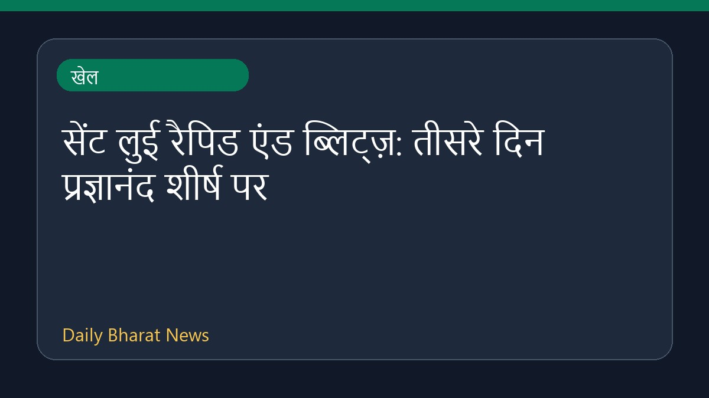

सेंट लुई रैपिड एंड ब्लिट्ज़: तीसरे दिन प्रज्ञानंद शीर्ष पर

सेंट लुई रैपिड एंड ब्लिट्ज़ शतरंज प्रतियोगिता के तीसरे दिन भारतीय ग्रैंडमास्टर आर. प्रज्ञानंद ने बढ़त बना ली है। उनके बाद जावोखिर सिंदारोव और वेस्ले सो दूसरे स्थान पर हैं। इस दौरान प्रज्ञानंद ने अपने करियर की सर्वोच्च रैपिड रेटिंग हासिल करते हुए विश्व के शीर्ष 10 खिलाड़ियों में प्रवेश कर लिया है। तीसरे दिन के रैपिड मुकाबलों में उन्होंने एक जीत और दो ड्रॉ खेले। इस प्रतिष्ठित टूर्नामेंट में दुनिया भर के दिग्गज खिलाड़ी हिस्सा ले रहे हैं।
मूल स्रोत: Sports News Sources
2026 Saint Louis Rapid & Blitz Day 3: Praggnanandhaa Leads 3rd Day, Trailed by Sindarov, Wesley So - Chess.com ↗
2026 Saint Louis Rapid & Blitz Day 3: Praggnanandhaa Leads 3rd Day, Trailed by Sindarov, Wesley So - Chess.com ↗